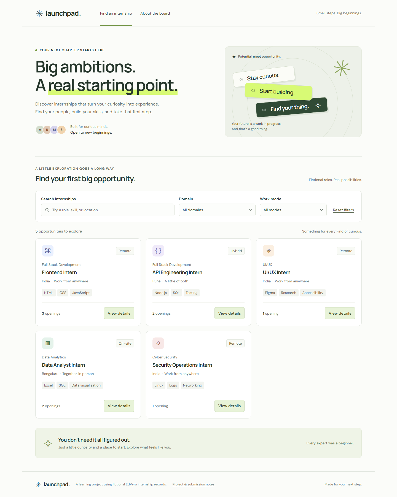
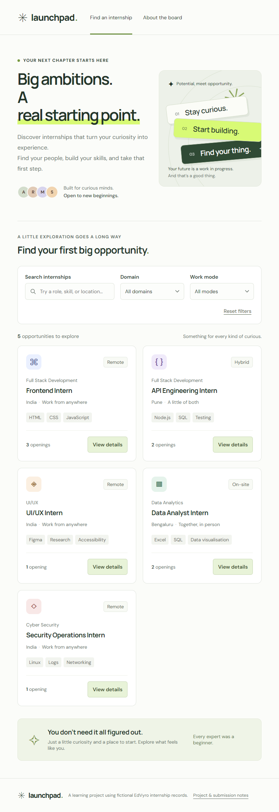
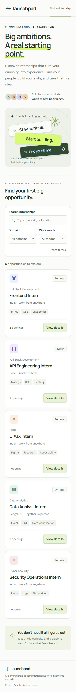

RESPONSIVE INTERNSHIP BOARD · PROJECT NOTES
A starting point, built from scratch.
A framework-free learning project exploring semantic HTML, responsive CSS, DOM rendering, and accessible interactions. All five fictional internship records come from the supplied EdVyro dataset.
Explore the boardWhat to try
- Search for SQL: two opportunities match.
- Choose Full Stack Development: one remains.
- Choose Remote: the empty state offers a clear way back.
- Clear filters and use Tab, Enter, and Escape to explore a detail dialog.
Page structure and reusable data
The page has a header, introductory section, labelled search form, live result count, reusable internship cards, details dialog, and footer. Separate data validation and filtering functions support the DOM renderer. Each supplied record and its ID are preserved.
Verification
Automated checks cover search, combined filters, validation, loading, empty and error states, retry, keyboard dialog operation, focus return, and layouts at 360px, 768px, and 1440px. Screenshots below show the tested layouts. No full screen-reader audit was performed.
Desktop · 1440px

Tablet · 768px

Mobile · 360px

Scope
This is the beginner frontend task. Internship applications are not collected. The broader source brief’s production API, database, and server-side application validation are not implemented. No secrets or personal records are used.